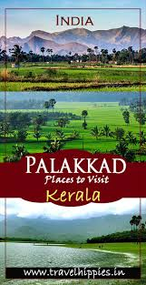
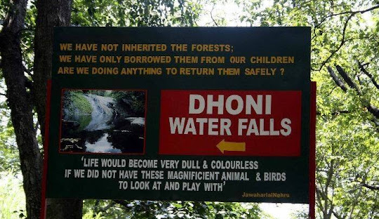

Palakkad, or Palghat, is a city in Kerala, a state in southwestern India. The 18th-century Palakkad Fort has sturdy battlements, a moat and a Hanuman temple on its grounds. North, on the Kalpathy River, the 15th-century Viswanatha Swamy Temple is the main venue of the famous Ratholsavam chariot festival. Northeast, near Malampuzha Dam, the town of Malampuzha has a rock garden created from recycled materials

Palakkad Fort is an old fort situated in the heart of Palakkad city of Kerala state, southern India. It was recaptured and rebuilt grandly by Sultan Hyder Ali in 1766 A.D and remains one of the best-preserved forts in Kerala.